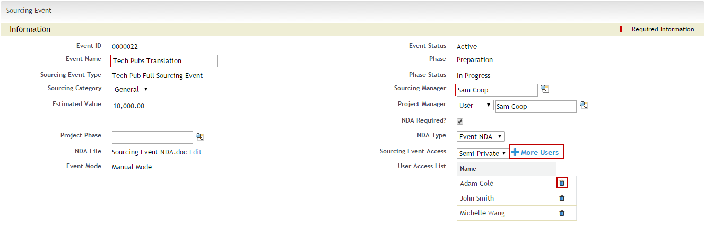

Setting Sourcing Event Access
Sourcing Event Access field allows the sourcing event creators or sourcing managers to set access restrictions to the sourcing event. For controlling or restricting access to sourcing event or for letting only a select group of users to access a particular sourcing event, this field can be used.
Sourcing Event Access field is on the sourcing event page and its value can be set at the time of creating the sourcing event. Sourcing Event Access field has following values:
|
Sourcing Event Access Type |
Description |
|
Public |
All the users having access to Sourcing Events object can view the Sourcing Event. |
|
Semi-Private |
Apart from the sourcing manager and the project manager, you can specify the users to whom you want to give access to the Sourcing Event. |
|
Private |
Only the sourcing manager and the project manager can view the Sourcing Event. |
Pre-requisites
Before using this field you need to make following settings and changes in your org:
- Set Organization-wide default for Sourcing Event object as Private.
- Set field level security as Visible for the user's profile, for Sourcing Event Access field of Sourcing Event object.
Using Sourcing Event Access Field
Following three scenarios explain specific configuration details needed to use the sourcing event access field:
Scenario 1: Public
Pre-requisites:
- To use Public sourcing event access, create a public group. To create a public group:
- Go to Setup > Administration > Public Group.
- Click New and create a Public Group.
- Add the public group id of the public group created in previous step, to the SRM System Properties. To add public group id:
- Go to Custom Setting > SRM System Properties
- Click Manage
- Click Edit next to System Properties
- In the SRM System Properties Edit page, enter the Public Group Id in the Sourcing Event Public Group field.
- Click Save.
To set sourcing event as Public:
- Go to Sourcing Event page.
- In the Sourcing Event Access field, choose Public from the picklist menu.
Thus, on setting sourcing event access as public, all the users of the public group as well as the Sourcing Manager and the Project Manager shall have access to the sourcing event.
Scenario 2: Semi-Private
To set sourcing event as Semi-Private:
- Go to Sourcing Event page.
- In the Sourcing Event Access field, choose Semi-Private from the picklist menu. This populates +More Users button and the User Access List field.
- Click + More Users. This pops open the User Selection Search window.
- Search user based on different search criteria available and in the search result, select the users you want to add to the User Access List and click Save Selection.
- The User Access List field now shows the name of the added users.
- To delete a user from the user access list, click delete icon
 next to the user's name.
next to the user's name.

Thus, on setting sourcing event access as semi-private, all the users added in the user access list as well as the Sourcing Manager and the Project Manager shall have access to the sourcing event.
Scenario 3: Private
To set sourcing event as Private:
- Go to Sourcing Event page.
- In the Sourcing Event Access field, choose Private from the picklist menu.
Setting sourcing event access as private, gives access of Sourcing Event only to the Sourcing Manager and the Project Manager.